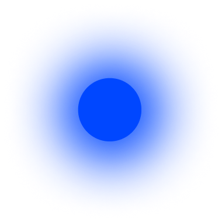

독일어에서 동사의 주어는 명사나 대명사를 사용해서 언제나 반드시 명시적으로 밝혀야 한다. 명사는 대명사로 대체할 수 있지만 생략할 수는 없다. 명령문이나 대화체에서만 예외적으로 생략 가능하다. 예를 들어, “ja, komm schon” (응, 가고 있어)는 “ja, ich komme schon (응, '내가' 가고 있어)를짧게 그리고 매우 비격식적으로 말하는 표현이다. 전 세계적으로 볼 때 이렇게 명사나 대명사를 의무적으로 사용하도록 하는 것은 보기 드문 현상이다. 대부분의 언어들은 대명사를 직접 표현하지 않고 암시하거나 아니면 동사에 통합시키는것을 아무렇지도 않게 생각하기 때문이다. 독일어는 여기에서 또 다시 괴짜언어적 특성을 가진다. 그리고 영어도 그렇다.
독일어에서는 평서문을 의문문으로 만들 때 일반적으로 주어와 동사의 순서를 뒤집는다. ‘Wir trinken Bier(우리는 맥주를 마신다)’와 같은 평서문이 의문문이 되면 주어 wir와 동사 trinken의 순서를 바꿔서 Trinken wir Bier?가 된다. 이 문장을 영어로 'We are drinking beer(우리가 맥주를 마시고 있다)'라고 번역한다면, 이런 방식으로 의문문 을 만드는 것은 영어 사용자에게 매우 익숙한 일이다. 영어도 똑같이 주어와 동사를 바꾸어 'Are we drinking beer?'라고 의문문을 만들 기 때문이다. 그러나 앞의 독일어 문장은 영어로 We drink beer(우리 가 맥주를 마신다)라고 번역할 수도 있다. 그런데 이 영어 문장의 의문문 은 Drink we beer?'가 아니라 'Do we drink beer?'다. 만일 영어 사용자가 주어 we와 동사 drink의 순서를 바꿔서 'Drink we beer?' 라고 말한다면 다른 사람들이 억양이나 상황을 파악해 그 의미를 이해 는 하겠지만, 매우 이상하게 쳐다볼 것이다.
독일어가 괴짜 지수 목록에서 열번째 자리에 오르게 하는 데 큰 역할을 한 것은 바로 어순에 대한 복잡한 규칙들이다. 만일 어떤 주절main clause이 주어로 시작하지 않으면, 주어를 첫 번째 동사 다음으로 미룬다. 그러므로 “Ich sehe sie'(나는 그녀를 본다)는 주어-동사-목적어 순이지만, 예를 들어 이 문장을 'dort'(거기에서)라는 단어로 시작하는 "Dort sehe ich sie"(나는 거기에서 그녀를 본다) 처럼 주어와 동사의 순서가 뒤바뀐다. 그리고 여기 에서 끝이 아니다. 종속절은 또 다르기 때문이다. 종속절에서 동사는 문장의 제일 마지막에 위치한다. 예를 들어 "Tch denke, dass ich sie dort sehe" (나는 거기에서 그녀를 볼 수 있을 것이라고 생각한다)라는 문장에서 종속절인 'dass ich sie dort sehe'는 동사인 sehe(본다)로 마무리된다. 이것이 혼란스럽게 보일 수도 있겠지만 사실은 엄격한 규칙을 따른 것이다. 반면, 영어는 아주 흔한 어순인 주어-동사-목적어 어순을 사용한다.
약간 불공평하지만 스노블렌은 '부정의 위치'라는 특징도 포함시켰다. 즉, 영어로 치자면 문장의 어느 위치에 ‘not(~아니다)'이라는 단어를 놓느냐에 대한 것이다.독일어는 영어의 not에 해당하는 단어인 nicht를 거의 목적어처럼 취급한다(사실 예전에는 목적어였다). 게다가 이 부정어의 위치는 문장에따라 이리저리 바뀌기 때문에 이 부문에서 특이한 점을 가진다. 이 특징이 포함된 것이 불공평하다고 느끼는 이유는 이것이 앞서 언급한 6번째의 복잡한 어순이라는 특징과 명백한 연관관계가 있기 때문이다. 변호사들이 '이중처벌'이라고 할 만한 경우라 하겠다.
혀 뒤쪽을 구개수, 즉 입천장 뒤쪽에서 흔들리는 작은 살덩어리, 즉 목 것에 가까이해서 소리를 내는 자음을 가지고 있는 언어는 거의 없다. 그리고 그런 소리를 가지고 있다 하더라도 보통은 파열음이며(/t/나 /p/가 파열음이다), /s/나 /n/ 같은 지속음이 아니다. 바흐(Bach)의 이름에 들어 있는 /kh/ 소리 덕분에, 독일어는 희귀한 발음의 자음을 가지게 된다. 567개의 언어 중에서 오직 11개의 언어만이 구개수 근처에서 소리가 나는 지속음을 가지고 있다. 영어 역시 씬(thin)이나 디스(this)에 들어있는 /th/ 소리 덕분에 희귀한 자음을 가진 것으로 판단된다.
독일어 단어에는 ng/ 소리가 단어의 중간이나 끝에는 올 수 있지만 처음에는 올 수 없다. 예를 들어 링 Ring(반지), 앙스트 Angir(불안), 핑어 Finger (손가락)는 가능하지만, 브라트부르스트Bratwurst (돼지고기 소시지)와 각 운이 맞는 Ngatwurst라는 단어는 존재할 수 없다. 아프리카와 동아시아 언어들에서는 /ng/로 시작하는 단어에 대해서 전혀 문제삼지 않지만, 독일어 음운규칙에서는 이를 허용하지 않는다. 이것은 영어도 마찬가지로, 두 언어 모두 동일하게 특징으로 가지는 부분이다.